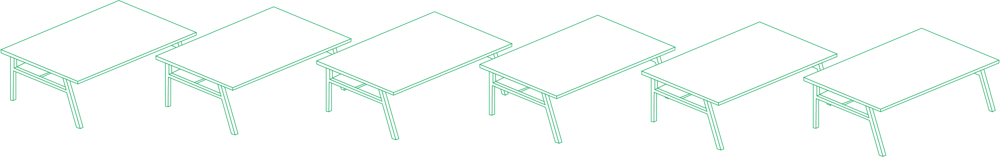

Individual
Weekly Blog Posts: Consistent, critical reflection on my design process, concept and the processes I adopted during development
Inspiration Pitch: pitch poster and explanation for the original physical computing concept "Purify N Go"
Initial Concept Sketch: Initial Concept art and drawings for the very first concept of Fittable
Conference Poster: A2 poster designed to convey the aims and functionality of Fittable
Conference Flyer: A5 flyer designed to promote/explain our project

Group
Initial Concept Pitch PPT: Powerpoint slides that assisted in explaining the initial concept
Project Proposal Report: Initial proposal describing what team will be creating and what it solves
Prototype Presentation PPT: Powerpoint slides that assisted in explaining the concept in middle stage
Interim Prototype Appraisal Report: Appraisal report providing interim feedback to peer teams
Finalised Project Webpage: Team Habits Webpage providing information about the project

DEVELOPING HEALTHY STUDY HABITS THROUGH POSITIVE RENIFORCMENT
DECO3850 Reflective Report by Elliot(Kwangjin) Kim
Abstract:
This report explores how the design of posture based device focused on positive reinforcement can give impacts to people in terms of developing good study habits to support good posture. By considering key principles in motivating technology, as well as the stress associated with desk work, it examines the design process of translating Fittable from negative reinforcement to positive reinforcement. Specific reference is made to the design consideration of the Fittable and evaluation of its effectiveness to engage user interaction to develop good study habits. Read here